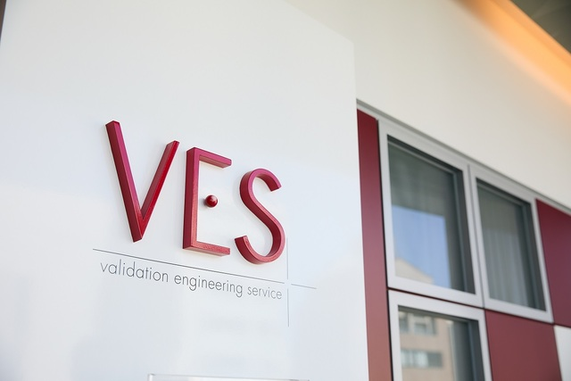

株式会社VES

株式会社ヴェス
設立 2003年7月1日
所在地・拠点
本社首都圏検証ラボ ： 東京都渋谷区恵比寿 4-20-3
恵比寿ガーデンプレイスタワー5階
滝沢ソフトウェア検証センター ： 岩手県滝沢市巣子152-409
滝沢市IPU第2イノベーションセンター 研究室2-4
本社連絡先 TEL：03-6277-0440
FAX：03-5794-3742
代表取締役 中村 慶郎
資本金 1,000万円 従業者数 139名（2023年4月現在）この会社の魅力
1.VESの4つの強み
会社を設立して20年で、他企業や顧客が信頼できるような強みを4つも作れているのは素晴らしいと感じた。
また、ここまでの実績を積み重ねてこれたのは、会社で働いている従業員の方々の仕事に対してのプロとしての高い意識と協調性がある職場だと思った。
詳細はこちら2.教育体制 3つのポイント
point1
ヴェスのノウハウを
フィードバックした
独自の教育プログラム
point2
研修・研究会を継続して
行うことにより、
属人化を防ぎ、
最新のノウハウを共有化
point3
エンジニアの
レベルに合わせた教育と
人員配置を実施
属人化による品質のばらつきを防ぐために、基礎的な知識を身に付け基礎を固めたり、過去の膨大な検証実績をもとにした検証パターンを体系化し、 自ら手を動かして考える実習プログラムなど、業務に近い教育プログラムがあることにや、 研修で終わりではなく、スキルアップのサポートや資格取得支援など、従業員のスキルアップ支援も積極的に行っているところにも 魅力を感じた。 こうした教育にも力を入れている企業は、上記のほうでも書いたように、他企業や顧客からの信頼にもつながるので、 教育体制を見て、教育プログラムの質は重要だと感じた。
詳細はこちら